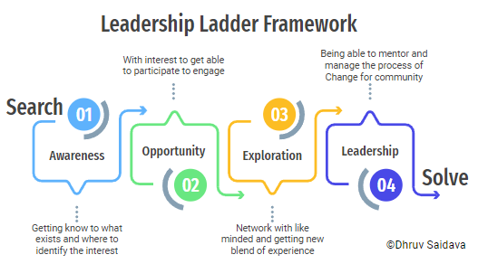

I am son of farmer family migrated to urban area in search of jobs selling farms and aspiring to give quality education for child.
Farmers in India or across the globe are hardworking and take challenges to solve problem they face in agriculture with their Jugaadu Minds.
My Father is fabrication expert was running a family business of metal fabrication to which he learned lot about Metals and Machining without any formal education.
I was not good at studies sue to language barrier being a Gujarati. It time to learn english and confidence to speak up but all those small repairs and work with my father I learned a lot about Fabrication.
I learned all as self learning and explored new things around the world which took me time to initiate something which can do similar impact to those who are fom rural and have aspirations.
2022:
Feb 21: Workshop on Understanding about Drones
Jan 08:21st-Century skill-based Techno Workshops at UniqYOU
Blog Link
My journey of gaining the confidence through ups and down with observing the work that to putting failure based self learning effort. From facing issues to speak in English to being able to initiate initiative to create sustainable ecosystem it is so much which got to myexperince and putting all of that to a framework I found Right Exposure at Right Time with Value based oppurtunity have power to create changemakers.
This framework and training process is been worked through out my life and gave me confidence to think beyond my capacities never accept failures from the systems.

MakerYatra Khedbrahma | 11 to 15 March 2022 | Sabarkantha District Gujarat INDIA
Rural MakerYatra is an enlightening journey to explore, connect and learn from rural India. MakerYatra enables and encourages yatries(participants) to be a part of the ecosystem of Rural development. The MakerYatra is currently aimed to be held in various clusters of rocky mountains of Aravali range of Sabarkantha district of North Gujarat.
First MakerYatra was organized in December 2018 for five days around the Idar block. Second such MakerYatra post Covid pandemic is happening in March 2022 in three clusters of Khedbrahma block.
MakerYatra attracts participants from diverse backgrounds who are either interested in rural grassroot innovation or want to contribute to the rural development space. MakerYatra welcomes from school children above age 13 to any age participants from any sector. MakerYatra also creates possibilities to connect and co create with the local innovators and across all MakerYatries too.
MakerYatra is an initiative of The Good Human Being Foundation who envisions to prepare rural & tribal underprivileged new generations for the unpredictable future towards fulfilment and livelihood.
Let’s feel the countryside and contribute to nation-building.
Dates : 11 - 15 March 2022
Register : bit.ly/makeryatra2022
Website : www.tghbf.org/makeryatra
I worked in tinkering space from 2012 and found many of kids don't having access to tools and mentoring have lost a big opportunity of their childhood to Tinker towards development of own together with community they live.
Through Tinkering India Initiative I am trying to Aware-Connect-Contribute to develop a community which delivery Quality Education in Native language.